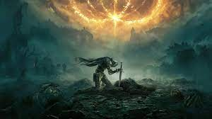
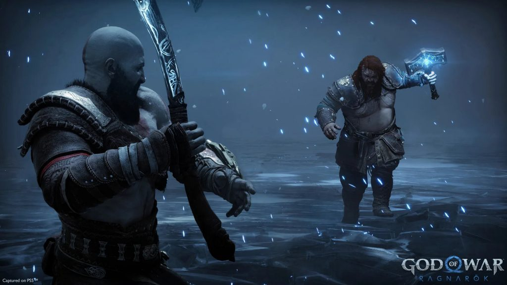
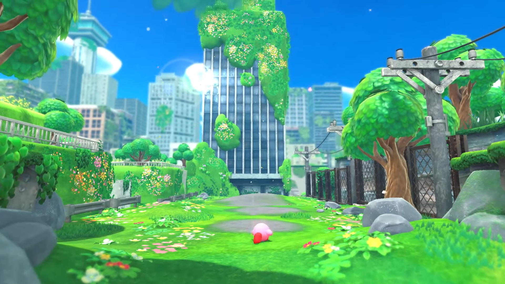
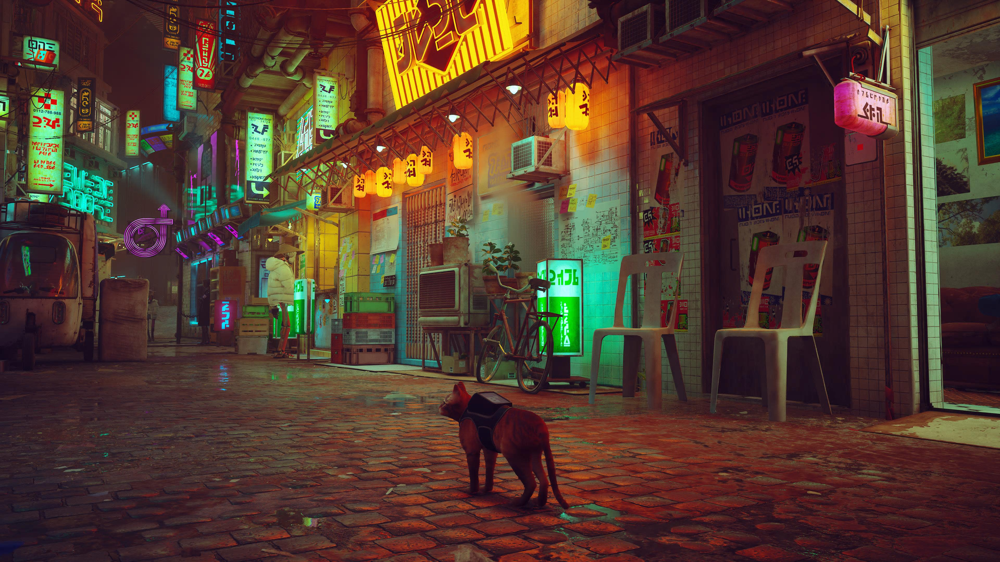
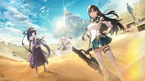
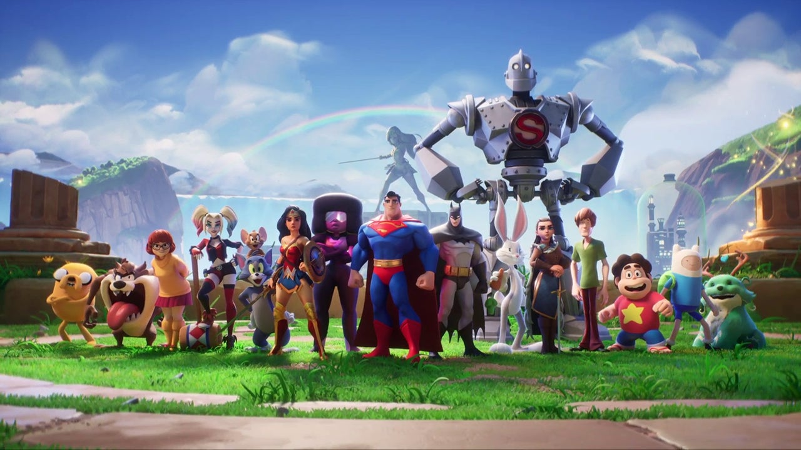
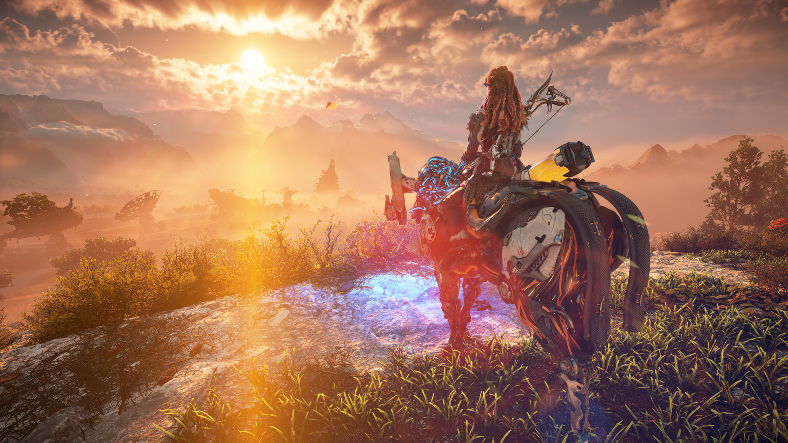
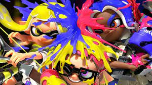
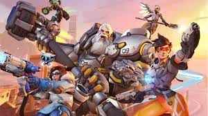

1. Elden Ring : Elden Ring est un jeu vidéo d'action-RPG développé par FromSoftware et édité par Bandai Namco Entertainment, issu de la collaboration entre le créateur de jeux vidéo Hidetaka Miyazaki et l'écrivain George R. R. Martin. Il est sorto le 25 février 2022 sur PlayStation 4, PlayStation 5, Xbox One, Xbox Series et Windows.

2. God of War: Ragnarok : God of War Ragnarök est un jeu vidéo d'action-aventure développé par SIE Santa Monica Studio et édité par Sony Interactive Entertainment, sorti le 9 novembre 2022 sur PlayStation 4 et PlayStation 5. Neuvième épisode de la série God of War, il fait suite à l'épisode God of War de 2018 ayant marqué un renouveau dans la série en se basant sur la mythologie nordique et non plus sur la mythologie grecque.

3. Kirby et le monde oublié : Kirby et le monde oublié, est un jeu vidéo de plateformes en trois dimensions développé par HAL Laboratory et édité par Nintendo, sorti le 25 mars 2022 sur Nintendo Switch.

4. Stray : Stray est un jeu vidéo d'aventure développé par BlueTwelve Studio et édité par Annapurna Interactive, sorti le 19 juillet 2022 sur Microsoft Windows, PlayStation 4 et PlayStation 5. Le jeu est un jeu d'aventure à la troisième personne, dans lequel le joueur contrôle un chat errant dans une ville cyberpunk, peuplée de robots.

5. Tower of Fantasy : Tower of Fantasy est un action-RPG gratuit en monde ouvert développé par Hotta Studio, une filiale de Perfect World. Le jeu se déroule dans un futur lointain sur la planète extraterrestre Aida, contaminée par une énergie radioactive mystérieuse mais puissante appelée omnium, après un cataclysme qui a presque anéanti la civilisation humaine et muté l'environnement de la planète. Le joueur incarne un vagabond qui explore le monde et combat des créatures mutantes et des forces hostiles à mesure qu'il avance dans l'histoire.
6. Gotham Knights : Gotham Knights est un jeu vidéo d'action-RPG développé par WB Games Montréal et édité par Warner Bros. Interactive Entertainment. Basé sur la franchise DC Comics, le jeu est sorti le 21 octobre 2022 sur Microsoft Windows, PlayStation 5 et Xbox Series

7. Multiversus : MultiVersus est un jeu vidéo de combat développé par Player First Games et publié par Warner Bros. Games, sorti en août 2022 sur PC, PlayStation 4, PlayStation 5, Xbox One et Xbox Series en free-to-play et cross-platform.

8. Horizons Forbidden West : Horizon Forbidden West est un jeu vidéo d'action-RPG développé par Guerrilla Games et publié par Sony Interactive Entertainment, sorti le 18 février 2022 sur PlayStation 4 et PlayStation 5. Il s'agit de la suite d’Horizon Zero Dawn et relate des événements se déroulant six mois après

9. Splatoon 3 : Splatoon 3 est un jeu vidéo de tir à la troisième personne développé par Nintendo EPD et édité par Nintendo, sorti le 9 septembre 2022 sur Nintendo Switch.

10. Overwatch 2 : Overwatch 2 est un jeu vidéo de tir en vue subjective multijoueur développé et édité par Blizzard Entertainment. La partie PVP du jeu est sortie en accès anticipé et free-to-play le 4 octobre 2022 sur Microsoft Windows, PlayStation 4, PlayStation 5, Xbox One, Xbox Series et Nintendo Switch.